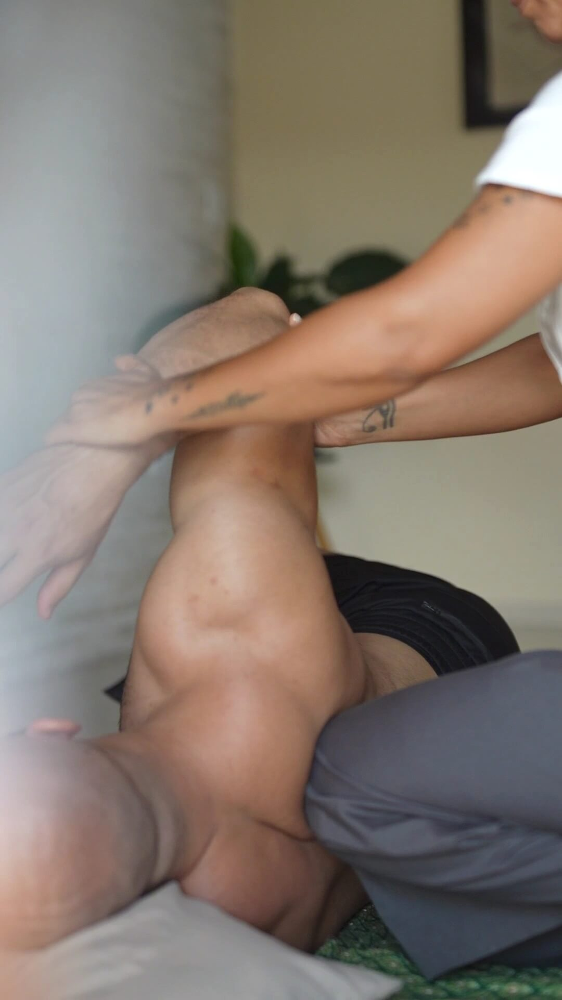
Recovery.
Balance.
Vitality.
A personalized experience
Discover the care
Florianópolis · Brazil
Thai Massage in Florianópolis · Campeche
Traditional Thai Massage and Thai Sports Massage with a personalized approach to the body's recovery, balance and vitality.
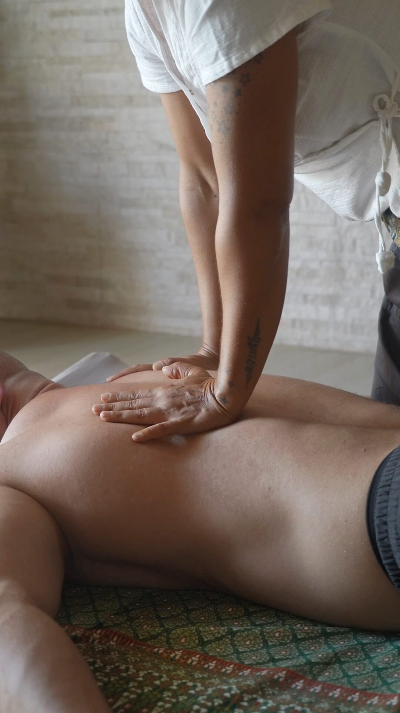
Tradition · Presence · Movement
01 / Traditional Thai massage
Thai Massage, a Thai healing tradition.
Thai Massage is a practice of Traditional Thai Medicine that sees the body as a whole, considering the relationship between structure, movement, energy and balance.
It combines pressure techniques, assisted stretching and joint mobilization to release tension, improve mobility and support the body's balance and vitality.
It is a massage for everyone: each session is always adapted to your body, your needs and your current moment.
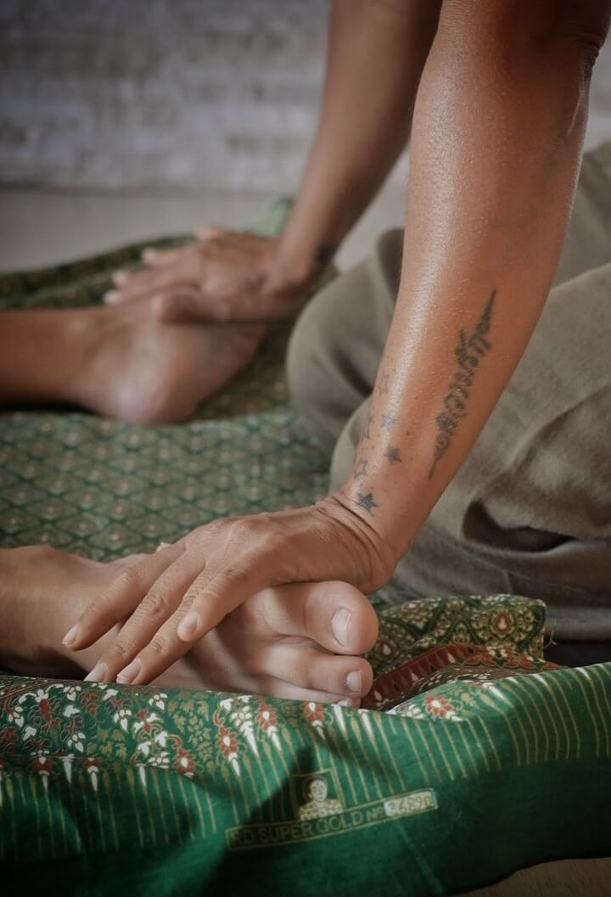
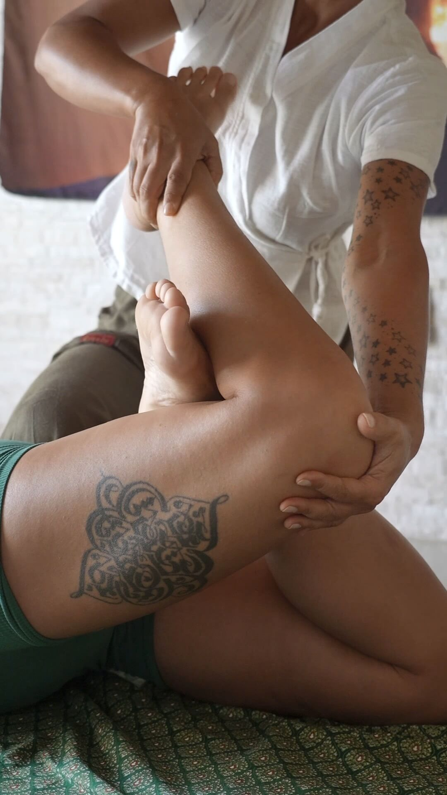
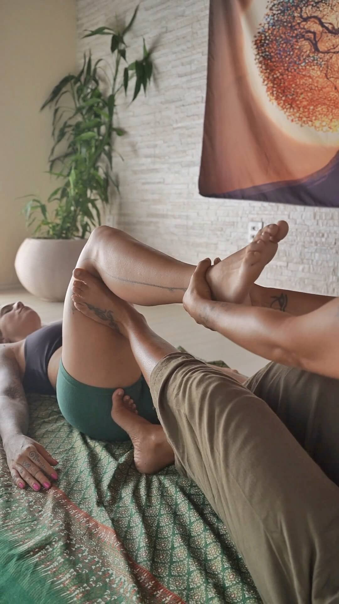
02 / Massage for athletes and active bodies
Thai Sports Massage.
The Thai technique applied to the needs of people who practice sports and lead a physically active life.
Thai Sports Massage takes into account your sport, your training routine and your individual needs, focusing the work on recovery, freedom of movement and physical potential.
RecoveryMobilityFlexibilityTension releasePreparation for movement
Although it is geared towards physically active people and athletes, Thai Massage is for everyone — every session is adapted to the person receiving it.
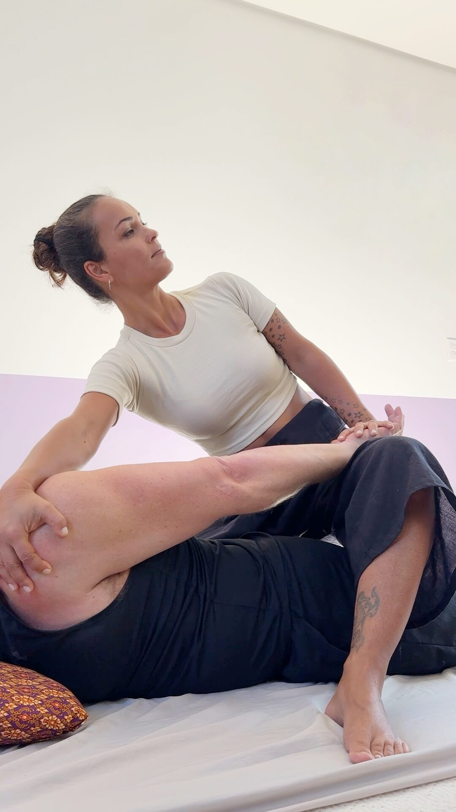
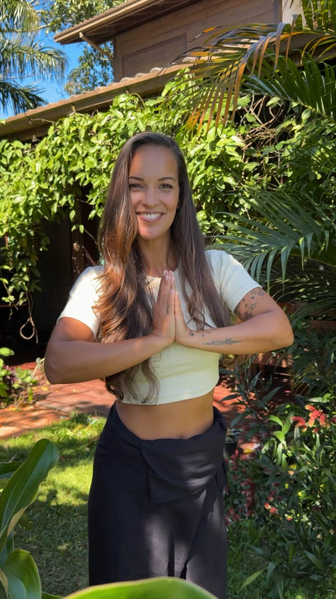
03 / About Karina Albuquerque
A path shaped by movement.
Karina's path is marked by her search for an integrated understanding of the human being and by the continuous deepening of her knowledge.
Before Thai Massage, she dedicated more than 15 years to dance, with an international career and exposure to a wide range of body practices. In 2011, she began her Thai Massage training in Chiang Mai, Thailand, qualifying as a therapist and teacher at ITM — International Training Massage School. Since then, she has kept deepening her knowledge with Thai teachers and masters.
Today, she brings more than a decade of experience in the therapeutic practice of Thai Massage, combining Thai tradition with a personalized approach.
15+years dedicated to dance
2011began training in Thailand
10+years of Thai Massage experience
Training and certifications
- 2011Thai Massage therapist and teacherITM — International Training Massage School · Chiang Mai, Thailand
- TodayContinuous learningOngoing studies with Thai teachers and masters
04 / Your experience
Every session begins with listening.
Every session is unique and individual. It considers your current moment, your needs and your goals, with a treatment that adapts to your body's responses throughout the session.
01
Assessment
Understanding your current moment, needs, history and goals.
02
Needs
Identifying what is a priority for you at that moment.
03
Direction
The session is guided by what was identified in the assessment, defining the approach, intensity and techniques.
04
Dynamic treatment
The treatment is adjusted throughout the session according to your responses, needs and limits.
05
After the session
Post-session guidance and a follow-up to understand the effects of the treatment and extend its benefits into your daily life.
05 / Care for every moment
Every moment calls for a different kind of care.
Holistic, personalized care for different needs — from recovery and mobility to relaxation and vitality.
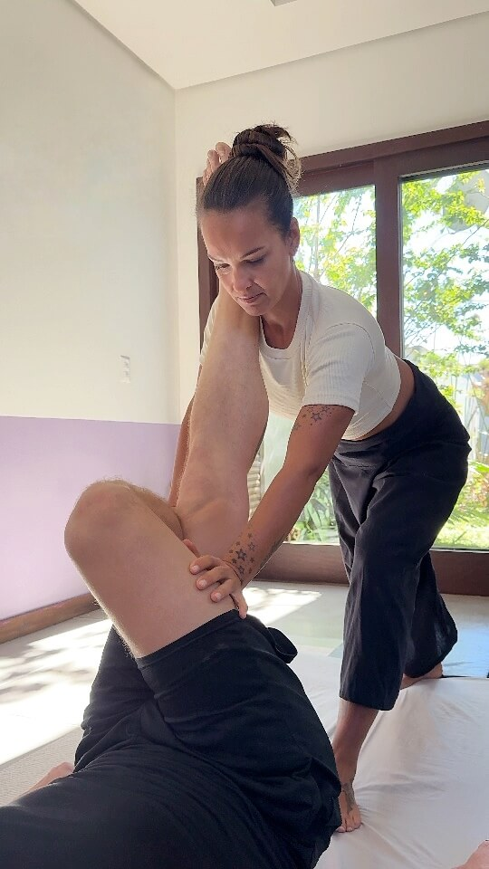
Mobility
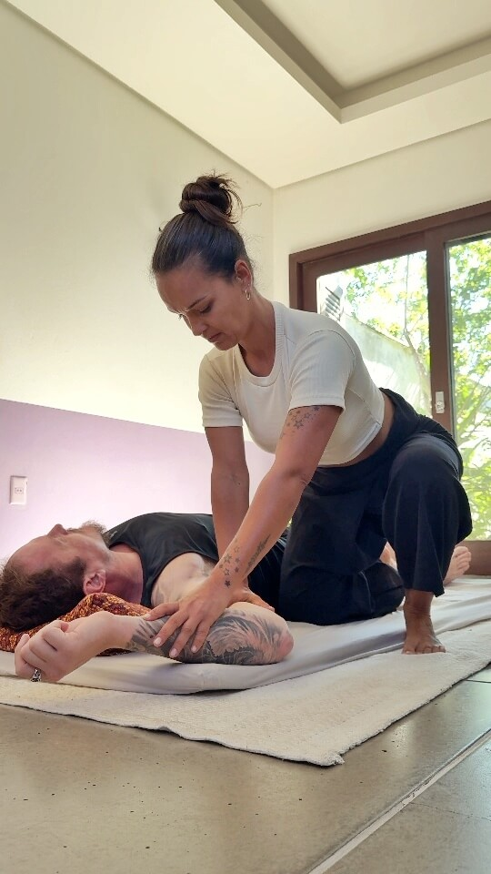
Tension relief
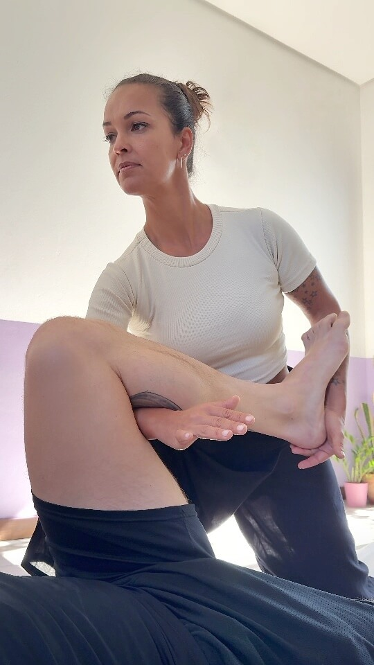
Performance
Balance and vitality
06 / From people who have experienced it
Experiences that speak for themselves.
Words from people who have experienced a session. The reviews below were selected from Karina's Google profile.
Google review
“
Featured reviewMy Thai Massage session with Karina was incredible!
Her expertise in the Thai technique is remarkable, and the massage brought immediate relief to my body, along with a sense of balance and spiritual well-being.
Tiago AmorimReview shared from Google (translated from Portuguese)“It was more than just a perfect massage. It's a safe space with a great atmosphere and a focus on individual needs and issues.”
LukasSource: Google“Before my session with Karina, I'd had back pain I'd been carrying for months. It was a really good experience, and I walked out feeling like a new person. Everything radiates good energy, and Karina is an excellent professional.”
Joel BaguéSource: Google“Sensational. Karina is extremely attentive and sensitive to the needs we bring to her.”
Cathy CabralSource: Google (translated from Portuguese)“I've been to Thailand many times, had hundreds of Thai massages, and Karina is wonderful! She really knows her stuff! Highly recommended!”
Timothy ReynoldsSource: Google07 / Frequently asked questions
Questions about Thai Massage.
The essentials so you can arrive at your first session feeling at ease.
What is Thai Massage?
Thai Massage is a practice of Traditional Thai Medicine that combines pressure techniques, assisted stretching and joint mobilization to release tension, improve mobility and support the body's balance and vitality.
What is the difference between Thai Massage and Thai Sports Massage?
Thai Sports Massage applies the Thai technique to the needs of people who practice sports. It takes into account the sport, the training routine and individual needs, focusing on recovery, mobility, flexibility and preparation for movement.
Who is Thai Massage for?
Thai Massage is for everyone. It suits anyone looking for recovery, greater mobility, tension relief, better performance or simply balance and vitality — from athletes and physically active people to those who want a moment of care — always adapted to each body.
How does a session work?
Every session is individual: it starts with an assessment of your current moment and goals, continues with a treatment adjusted to your body's responses, and ends with post-session guidance and a follow-up.
Where are sessions held and how do I book?
Sessions are held in Campeche, Florianópolis (SC, Brazil), by appointment only. Bookings are made via WhatsApp at +55 48 99695-4356, and the exact address is shared when your session is confirmed. Sessions are available in English.
What is Karina Albuquerque's training?
Karina began her training in Chiang Mai, Thailand, in 2011, qualifying as a Thai Massage therapist and teacher at ITM — International Training Massage School. Since then, she has continued to deepen her knowledge with Thai teachers and masters.
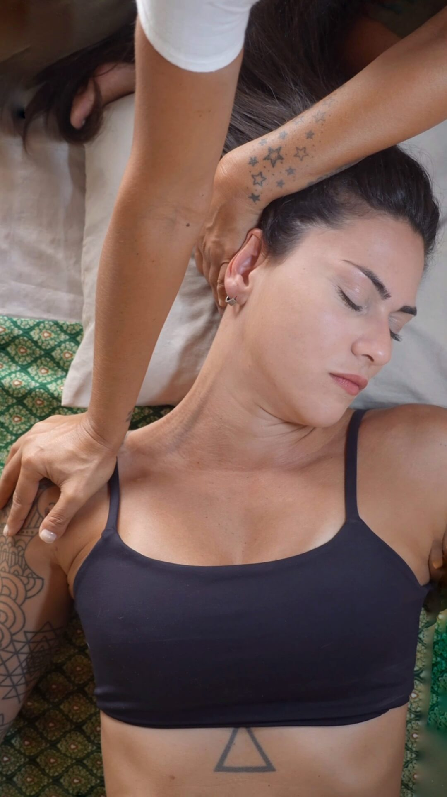
Your moment starts here
Your moment of care is now.
Set aside some time to experience deep, attentive care designed for you.
08 / Thai Massage in Campeche, Florianópolis
Let's find your moment.
Thai Massage and Thai Sports Massage sessions by appointment in Campeche, Florianópolis. Check availability and choose a time for your session.
WhatsApp+55 48 99695-4356
InstagramKarina Albuquerque — Thai MassageInserir o link correto do perfil antes da publicação.
LocationCampeche — Florianópolis, Santa Catarina, BrazilBy appointment only.
The exact address will be shared or confirmed when you book.
Karina Albuquerque · Thai Massage
“Well-being is not a destination. It lies in the way we choose to live.”
Recovery · Balance · Vitality